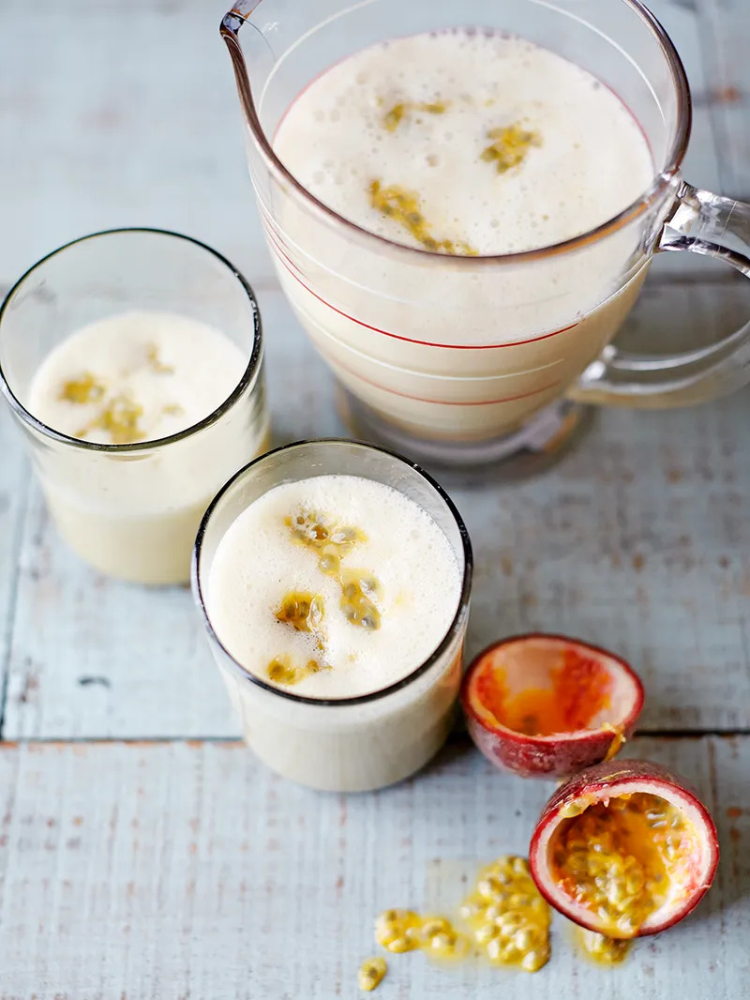

Almond, Banana & Passion Fruit Smoothie

DOESN'T IT LOOK DELICIOUS!?
Ingredients
- 1 large ripe banana
- 500 ml almond milk
- 100g/3½oz soft light brown sugar
- 150ml/5fl oz sunflower or vegetable oil
- 1 teaspoon almond essence, optional
- 4 ripe passion fruit
Steps
- Peel the banana and place in a blender with the almond milk and almond essence (if using).
- Halve the passion fruit, then scrape most of the pulp into the blender and blitz to combine.
- Serve in tall glasses, over ice if you like, with the remaining passion fruit pulp spooned over the top.